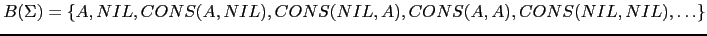

Sig: Manejo en jison de Sup: Análisis Sintáctico Ascendente en Ant: Precedencia y Asociatividad Con:
Recuerde que el orden en que se evalúan los fragmentos de código es el de un recorrido primero-profundo del árbol de análisis sintáctico. Mas específicamente, considerando a las acciones como hijos-hoja del nodo, el recorrido que realiza un esquema de traducción es:
1 function esquema_de_traduccion(node) {
2
3 for(c in node.children) { # de izquierda a derecha
4 child = node.children[i];
5 if (child.instanceof('SemanticAction') { # si es una acción semántica
6 child.execute;
7 }
8 else { esquema_de_traduccion(child) }
9 }
10 }
Obsérvese que, como el bucle recorre a los hijos de izquierda a derecha, se debe dar la siguiente condición para que un esquema de traducción funcione:
Para cualquier regla de producción aumentada con acciones, de la forma
{ action(A{b}, X
{c}
X
{d})}
debe ocurrir que los atributos evaluados en
la acción insertada después de
 dependan de atributos y variables que fueron computadas durante
la visita de los hermanos izquierdos o de sus ancestros.
En particular no deberían depender de atributos asociados
con las variables
dependan de atributos y variables que fueron computadas durante
la visita de los hermanos izquierdos o de sus ancestros.
En particular no deberían depender de atributos asociados
con las variables
 . Ello no significa que
no sea correcto evaluar atributos de
. Ello no significa que
no sea correcto evaluar atributos de
 en esa acción.
en esa acción.
Por ejemplo, el siguiente esquema no satisface el requisito:
porque cuando vas a ejecutar la acción { console.log(A.in) }
el atributo A.in no ha sido computado.
Los atributos de cada símbolo de la gramática  se dividen en dos grupos disjuntos: atributos sintetizados y atributos heredados:
Casiano Rodríguez León